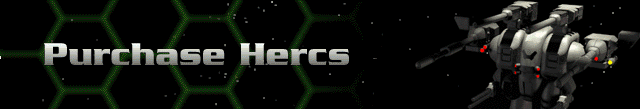
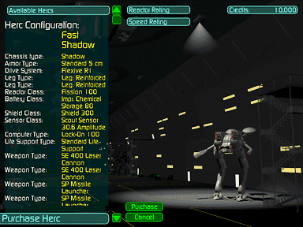

At the beginning of the game you are automatically assigned two Hercs, a Remora and a Shadow class, and two prototype Bioderms. You also begin with a “pre-rank” of Ensign. As an Ensign, although you are allowed to command three Hercs, you only begin with 10,000 credits – barely enough to add to your fleet. The number of models you can access will broaden (as will the quantity you command) if you prove worthy to progress through the Commander Ranks. To effectively add to your Herc fleet, you should complete the Training mission and at least one mining mission first.
Click on a Herc from the list to display its configuration data. If the specs meet with your tactical requirements and you can afford it, add the Herc to your fleet. In the beginning (after the Training Mission) you will only be able to control four Hercs. You can add to your fleet if you progress in rank. See Career Status for a complete list of ranks.
Each Herc begins with a Reactor Rating (the power efficiency of its current reactor) and a Speed Rating (how quickly it can move as configured). Upgrades to the reactor will improve the Reactor Rating. Almost all changes to any devices or weapons will affect the Speed Rating. How this Speed Rating will be affected is indicated in every device and weapon description inside the Manage Hercs section of the Herc Bay.
